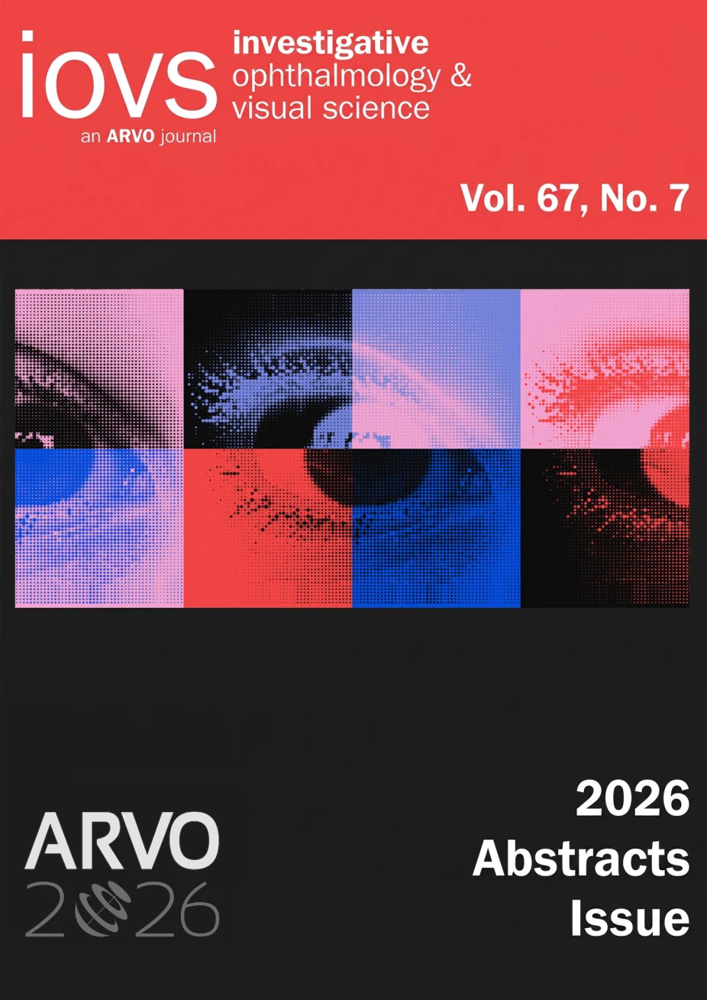
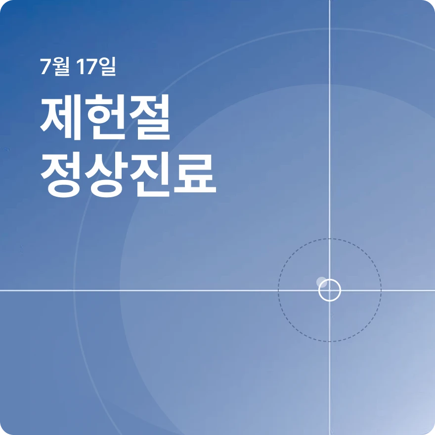
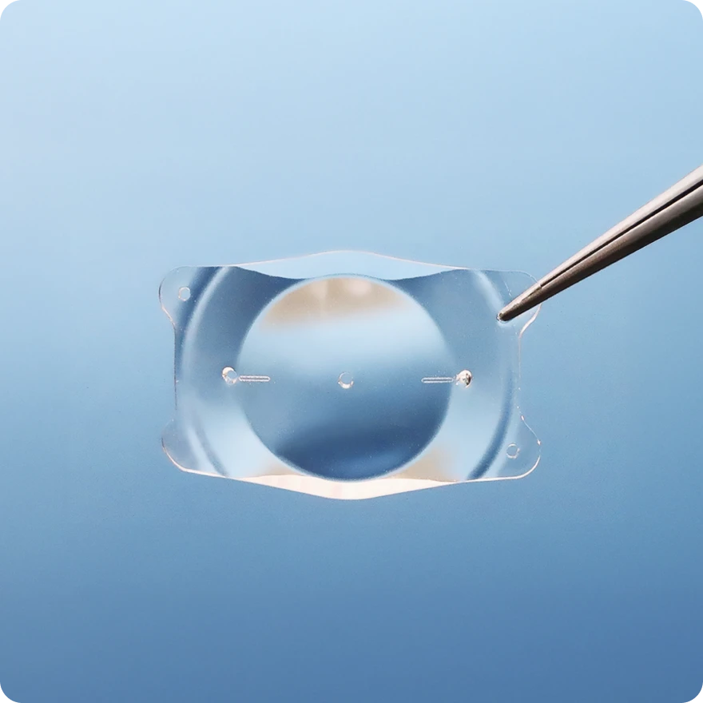
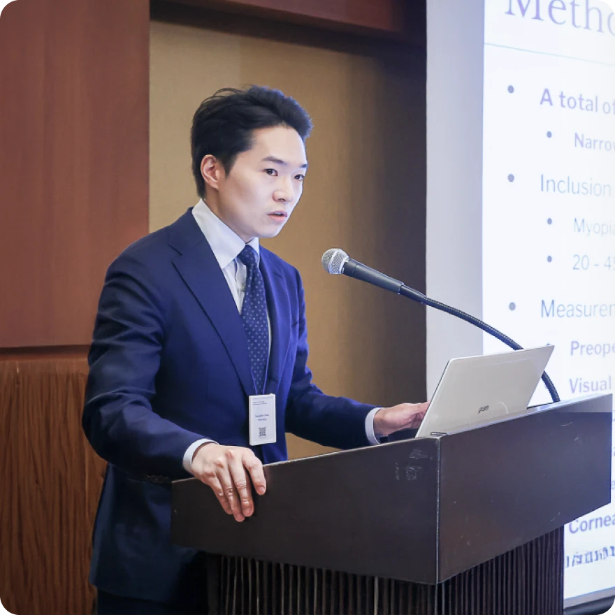
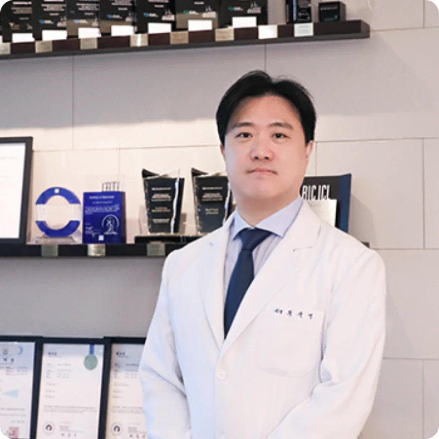
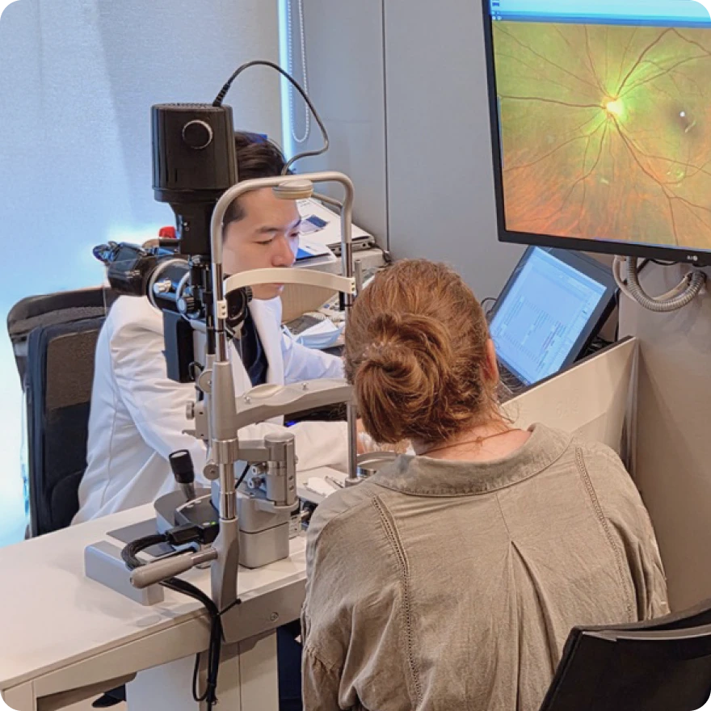
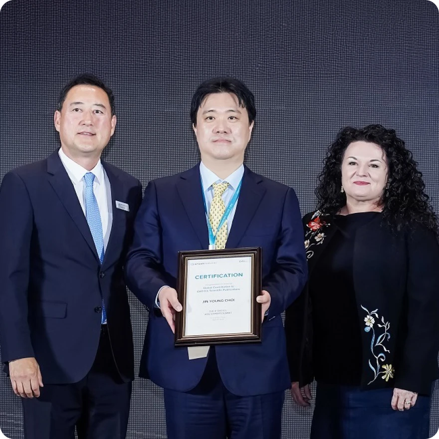
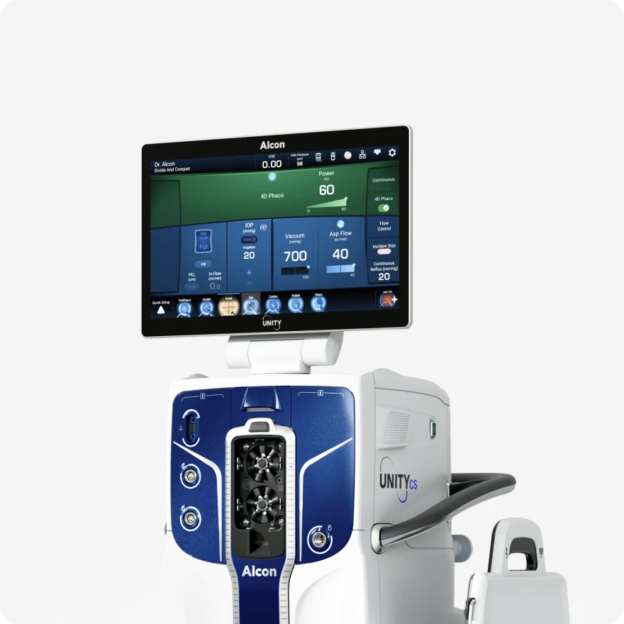
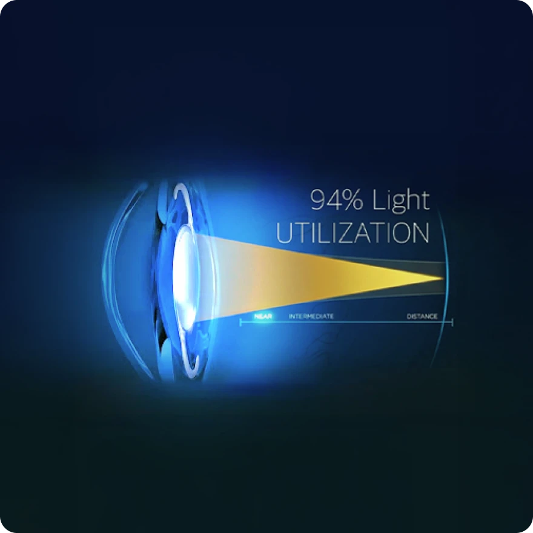
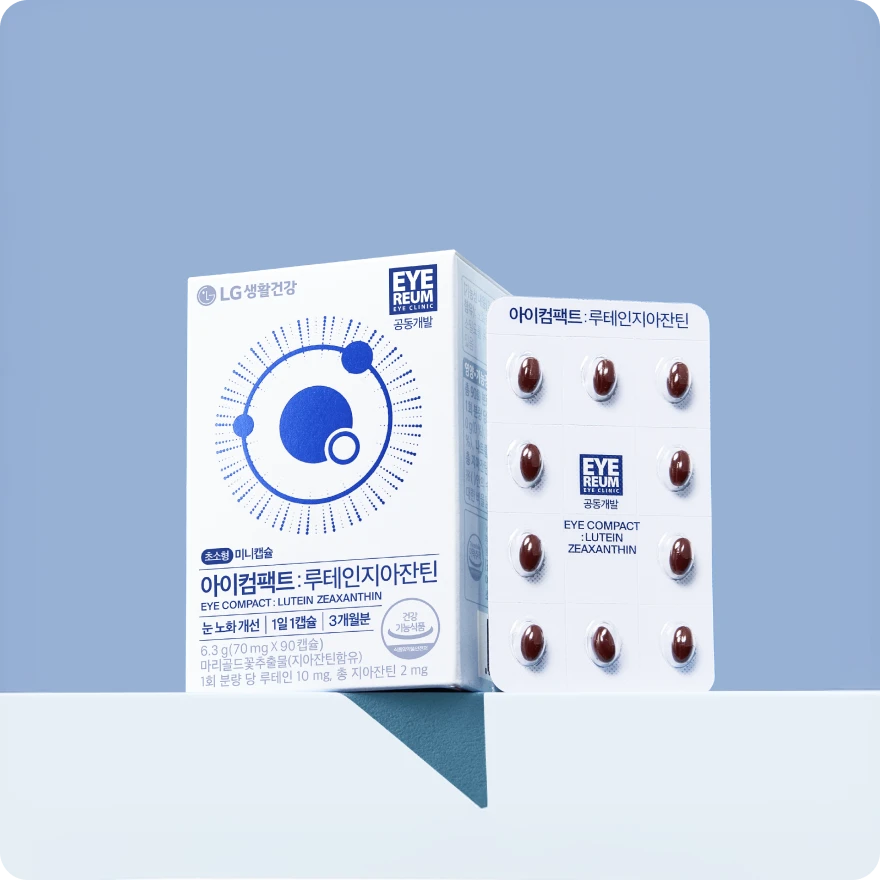

글로벌 학계가 주목하는 아이리움의 SCI 논문과 지속적인 연구 발표로 아이리움은 시력교정술의 표준을 과학으로 정립해 나갑니다.

아이리움안과 강성용 원장이 공동저자로 참여한 정밀 시력교정술 연구가 지난 5월 열린 2026 ARVO Annual Meeting에서 발표됐으며, 해당 연구 초록이 IOVS 2026년 6월 ARVO Abstracts Issue에 게재됐습니다.

안녕하세요 아이리움안과입니다. 7월 진료일정 안내드립니다. 아이리움안과는 7월 17일(금) 제헌절 정상진료하며, 검사·수술·당일수술(스마일, 라식, 투데이라섹...

아이리움안과 최진영 원장의 의료진 칼럼 ICL 잘하는 안과의사 고르는 법 2편입니다. 이번 2편에서는 ICL에서 중요한 렌즈 사이즈와 볼팅, 난시 교정을 위한 토릭 ICL...

아이리움안과 최진영 원장이 7월 12일, 서울드래곤시티에서 열리는 2026 한국백내장굴절수술학회 정기학술대회(KSCRS Annual Symposium)에서 연자로 강연합니다.

아이리움안과 최진영 원장의 새로운 의료진 칼럼을 소개합니다. 이번 칼럼은 ICL 렌즈삽입술을 고려하시는 분들이 가장 많이 궁금해하는 ICL 잘하는 안과 고르는 법...

기자단은 아이리움안과를 방문해 정밀검사 장비와 진료 시스템을 둘러보고, 외국인 환자를 위한 검사·상담·수술 전후 관리 과정을 확인했습니다.

제4회 EVO ICL APAC Experts Summit(The 4th EVO ICL APAC Experts Summit)이 2026년 4월 25일 중국 광저우에서 열렸습니다. EVO ICL APAC Experts...

아이리움안과가 로우에너지 백내장을 시행중입니다. (2026년 4월) 로우에너지 수술은 낮게 전달되는 초음파 에너지를 낮추고, 수술 중 안압 환경을 보다...

아이리움안과가 2026년 4월 13일부터 클라레온 팬옵티크스 프로(Clareon PanOptix Pro)를 적용한 노안·백내장수술을 시작합니다.

아이리움안과와 LG생활건강이 공동 개발한 프리미엄 눈 건강기능식품 '아이컴팩트 루테인지아잔틴'을 소개합니다. 아이리움안과 의료진은 안과 전문의로서의 임상 경험지...